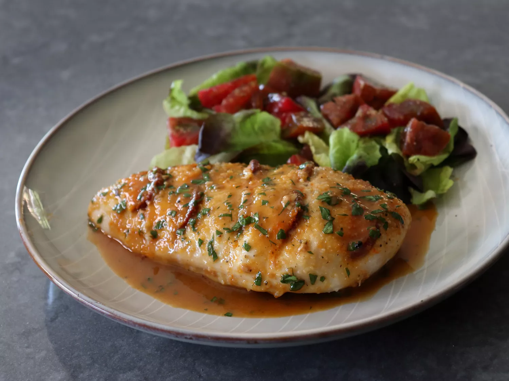

Lasagna

Description
Spanish chorizo stuffed chicken breast is a prime example of my successful attempts in making boneless skinless chicken breast less boring—one foolproof thing is stuffing it with sausage.
- Mix olive oil, garlic, and oregano in a small bowl and set aside.
- Preheat the oven to 475 degrees F (245 degrees C).
- Use a sharp thin knife to make five deep slashes at a 45-degree angle into the chicken breast, about an inch apart, going almost, but not quite all the way through. Leave about 1/2-inch of breast un-cut on either side of the slash.
- Salt chicken breasts generously on both sides, and spoon oil mixture on top. Rub olive oil mixture into slashes, and all over the surface and bottom of the breasts.
- Slide slices of chorizo into the slashes in the chicken. Once inserted, at least 75% of the sausage slice should be covered by chicken.
- Transfer chicken to an oven safe skillet or pan, and pour over any extra oil. Dust breasts with breadcrumbs, and sprinkle with cheese.
- Roast in the preheated oven until chicken is cooked through, 20 to 25 minutes. An instant-read thermometer inserted into the center should read 150 degrees F (65 degrees C).
- Remove chicken from pan, and let rest on plate, loosely covered with foil.
- Add vinegar and sherry to the pan and turn the heat to medium high. Season with salt and pepper and bring to a boil, stirring occasionally. Cook until sauce has reduced by half.
- Add any accumulated juices from the plate of chicken to the pan. Reduce heat to lowest setting and stir in cold butter. Stir constantly until butter has disappeared.
- Turn off heat, and stir in the parsley. Taste for seasoning and adjust if necessary.
- Transfer chicken to plates and top with sauce.